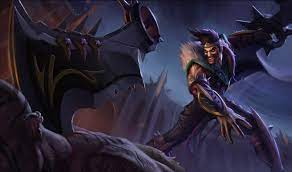
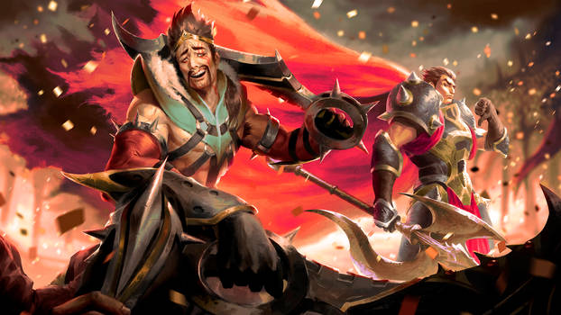
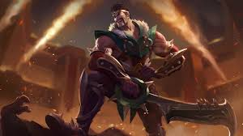

Leauge of Draven



In Noxus, warriors known as Reckoners face one another in arenas where blood is spilled and strength tested—but none has ever been as celebrated as Draven. A former soldier, he found that the crowds uniquely appreciated his flair for the dramatic, and his unparalleled skill with his spinning axes. Addicted to the spectacle of his own brash perfection, Draven has sworn to defeat whomever he must to ensure that his name is chanted throughout the empire forever more.
Draven gains his fans' Adoration when he catches a Spinning Axe or kills a minion, monster, or tower. Killing enemy champions grants Draven bonus gold based on how much Adoration he has.